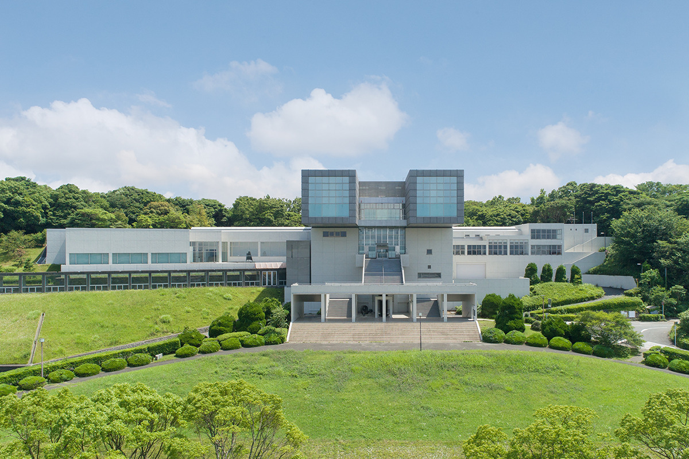
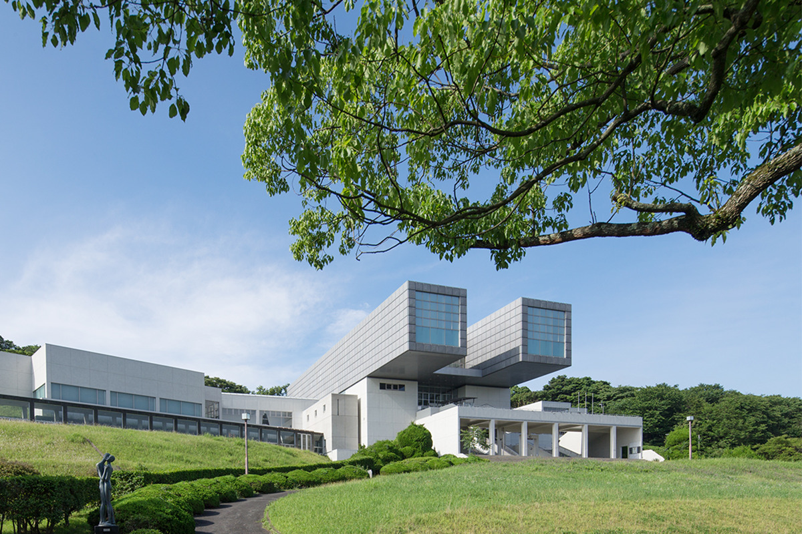
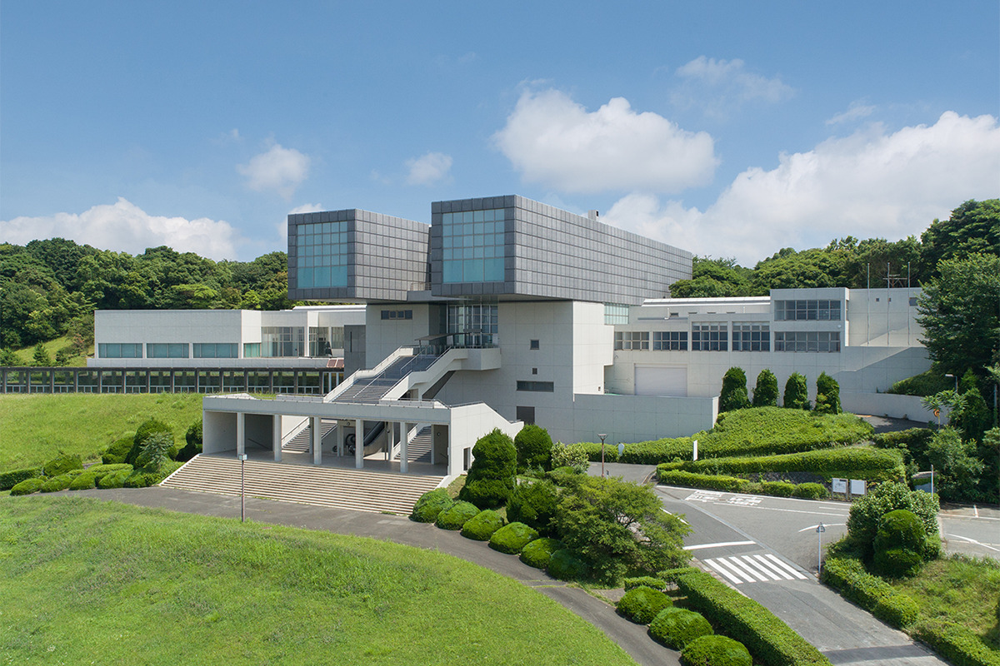
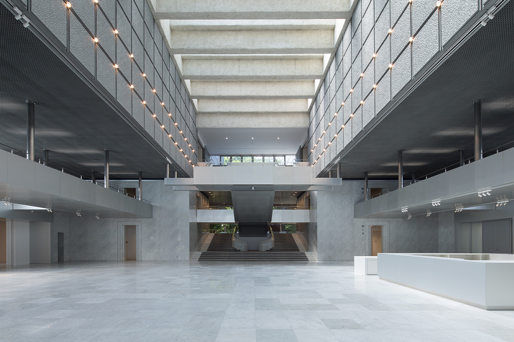
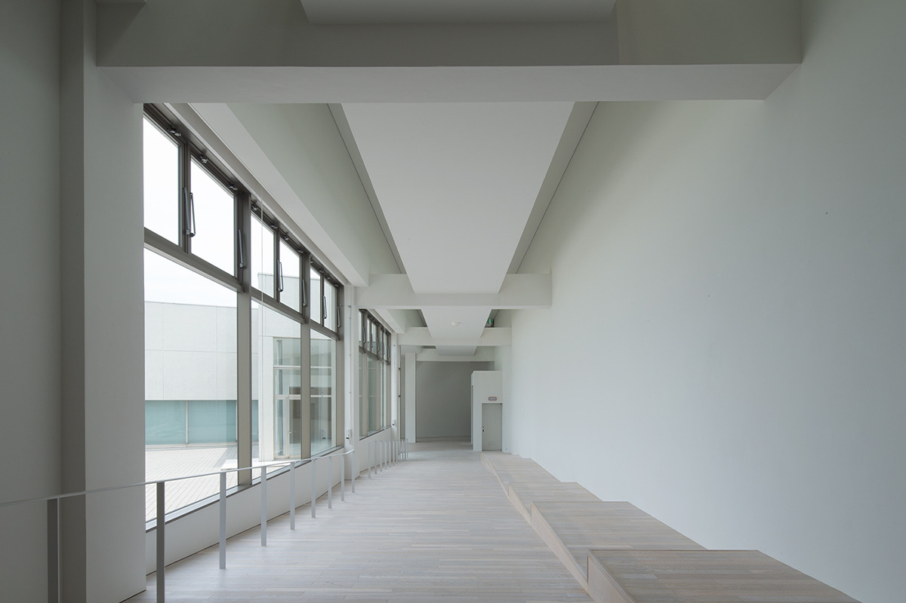
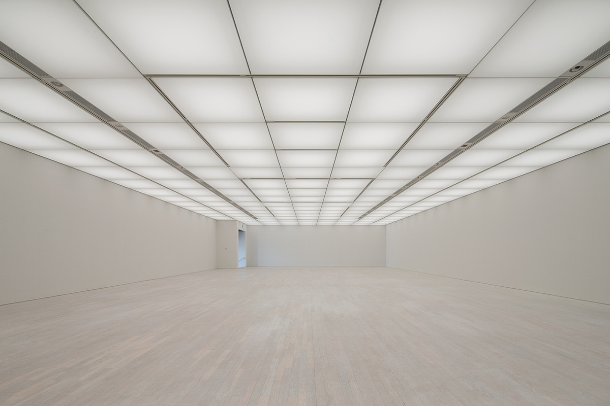
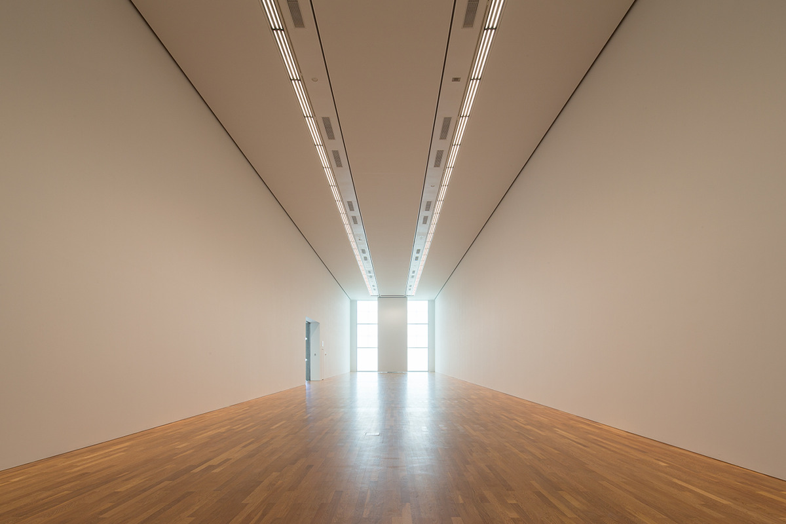
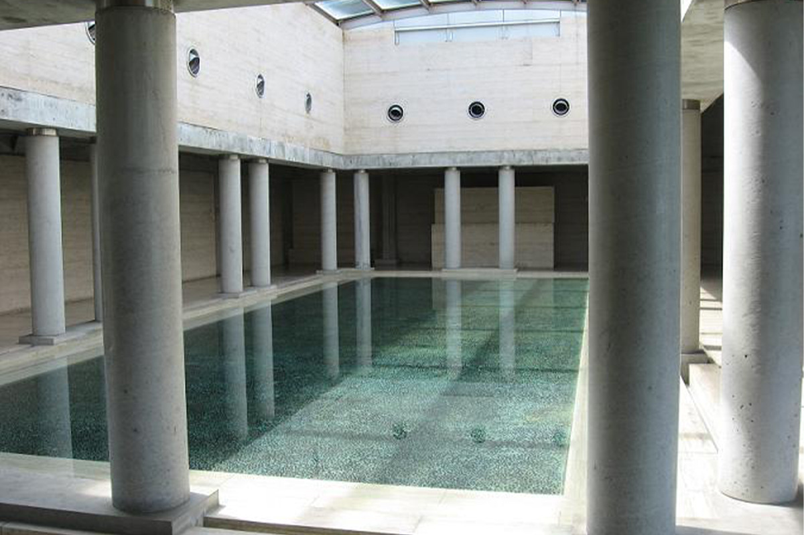

Префектура Фукуока · Китакюсю · архитектура и искусство
Бинокль на холме: музей искусств Китакюсю по проекту Араты Исодзаки

Городской музей искусств Китакюсю стоит на холме над морем и заводами, и само здание здесь работает как картина. Это одна из ранних больших работ Араты Исодзаки, архитектора, получившего Притцкеровскую премию.
Архитектор
Ранний Исодзаки
Притцкеровскую премию называют Нобелевской премией в архитектуре. В 2019 году её получил Арата Исодзаки, архитектор родом из префектуры Оита на Кюсю. Музей в Китакюсю, крупнейшем городе на севере префектуры Фукуока, считают одной из главных его ранних работ.

Здание построено на сетке квадратов. Из фасада вперёд выдаются две длинные трубы, а влево и вправо расходятся крылья. Из-за этой формы в городе его зовут «биноклем на холме». Трубы и правда смотрят на город: из кафе в музее открывается вид на море и кварталы Китакюсю.

История
Музей для миллионного города
Музей открылся в 1974 году и стал одним из первых публичных художественных музеев на западе Японии. Город с населением около миллиона человек хотел получить музей под стать себе: с богатым собранием, которое выставлено постоянно, с сильными временными выставками и с местом, где горожане могут смотреть искусство и показывать своё.
Коллекцию с самого начала собирали системно, чтобы она показывала новое и новейшее искусство Японии и мира с разных сторон. В ней есть импрессионисты, в том числе Ренуар, Дега и Моне, гравюры укиё-э от эпохи Эдо до эпохи Мэйдзи, живопись и графика XX века, а также работы художников из Китакюсю и других городов запада Японии.
В 1987 году к главному зданию пристроили аннекс. Позже у музея появились и другие площадки: в 2003 году филиал в торговом комплексе Riverwalk Kitakyushu (позже его работу приостановили), а в 2013 году галерея в районе Куросаки.
Внутри
Симметрия и мрамор

Залы делятся на два типа: для временных выставок и для постоянной экспозиции. Два зала временных выставок находятся к востоку от входного зала. В них проходят выставки, которые готовит сам музей, и передвижные выставки из других городов.


Если подняться по лестнице напротив входа на третий этаж, попадёшь внутрь тех самых труб. Два зала в них отданы под коллекцию музея, и часть собрания выставлена здесь постоянно. Постоянная экспозиция разделена на пять разделов, у каждого своя тема.

Аннекс пристроили, чтобы местным художникам было где выставляться. На первом этаже находится городская галерея, которую по просьбе жителей сделали постоянной: здесь проходят персональные и групповые выставки авторов из Китакюсю. На третьем этаже аннекса устроен атриум, зал для отдыха, где колонны стоят вокруг бассейна в центре, как в средневековом внутреннем дворе. После светлых открытых коридоров это тихое замкнутое пространство.

С декабря 2025 года аннекс на ремонте, завершить его планируют в марте 2027 года, поэтому перед поездкой стоит посмотреть на сайте музея, какие залы открыты.
Парк
Скульптуры на холме
Музей стоит на холме на стыке трёх районов Китакюсю: Кокуры, Тобаты и Яхаты. Отсюда видны промышленная зона на берегу и городские кварталы. Вокруг здания раскинулся зелёный парк площадью около 100 000 квадратных метров, где горожане гуляют и бегают. Вдоль дорожек расставлены 23 скульптуры и арт-объекта.
Время в этом музее складывается из нескольких удовольствий: коллекция, виды на море и город из окон и сама архитектура Исодзаки, которая с 1970-х годов нисколько не устарела.
Городской музей искусств Китакюсю (главное здание и аннекс)
- Адрес
- префектура Фукуока, Китакюсю, район Тобата, Нисисаягатани-мати, 21-1
- Телефон
- +81 93-882-7777
- Часы работы
- 9:30–17:30 (вход до 17:00)
- Выходные
- понедельник (если понедельник праздничный, то следующий рабочий день), новогодние праздники
- Сайт
- kmma.jp